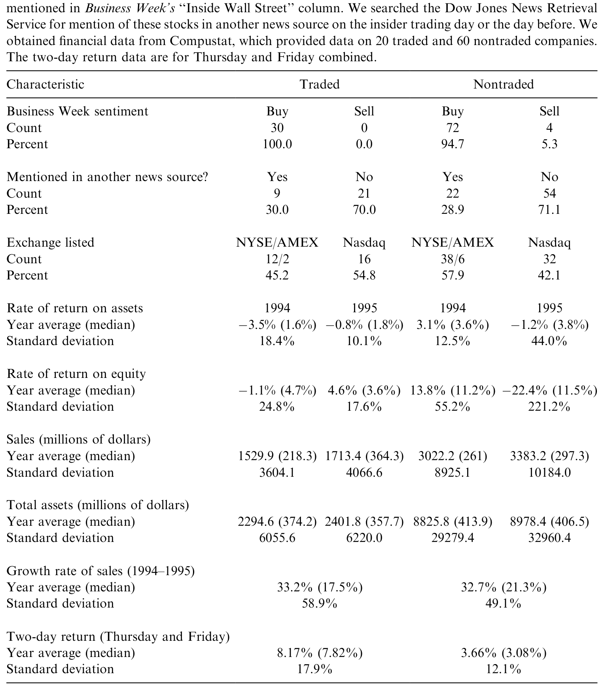
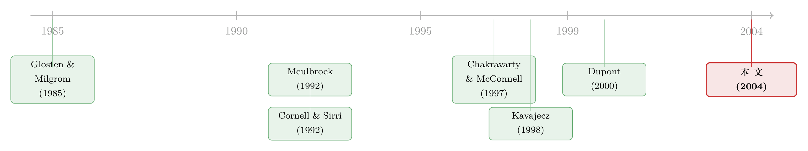

内幕交易者进场那一刻，做市商收起的不是价差，而是「深度」
本文读的是 Fishe & Robe (2004, Journal of Financial Economics)：五个股票经纪人提前一天拿到了《商业周刊》的荐股专栏并据此交易，作者借这桩法庭案件做成一个罕见的「自然实验」，发现做市商对内幕交易的防御武器主要不是加宽价差，而是抽走报价深度——而且专家市场（NYSE/Amex）抽得比交易商市场（Nasdaq）狠得多：内幕交易区间里，前者的卖方深度比前一日平均水平低 38%，后者只低 3%。
1 一桩「读报」的内幕交易案
研究内幕交易的人都有一块心病：你很难证明某个人「确实」用了重大非公开信息。
绝大多数研究只能靠身份去推断——他是公司高管、是董事、是离消息最近的人，所以「大概」用了内幕。可这毕竟是推断。市场上那么多在消息公布前买入的人，到底是真的提前知道，还是恰好运气好、恰好在追势、恰好读懂了价格？把这两拨人混在一起，任何关于「内幕交易如何冲击市场」的结论都站不太稳。
于是，一桩看起来颇为「市井」的案子，反而成了金融学里难得的干净样本。
1995 年 6 月到 1996 年 2 月间，五个股票经纪人通过买通《商业周刊》（Business Week）当地分销商的一名工头，每周四下午提前一天拿到了那本杂志最有名的荐股专栏——「Inside Wall Street」（IWS）。专栏要到周四下午 5:15 才通过新闻线发布、晚上 7:00 才上 AOL，而他们在收盘前就能据此下单。整个过程，他们和家属、客户一共买入了 $7.73 million 的相关股票，约占这些股票当周四总成交的 5%。直到《商业周刊》自己注意到某些荐股出现异常交易，骗局才在 1996 年 2 月 5 日那期戛然而止；SEC 于 1999 年 1 月提起指控。
这正是「自然实验」之所以珍贵的地方：法庭记录把每一笔内幕交易的日期、数量、成本，甚至时间戳，都钉在了交易流里。我们不再需要去「推断」谁是知情者——名单、金额、时点，白纸黑字。
这条线索，和我此前聊过的几篇并不孤立。经纪人天然处在信息的下游，能看到别人看不到的订单与传闻（关于这一点，可参见《你的经纪人，比 SEC 公告知道得更多》）；而「提前几天拿到尚未公开的研报/专栏」这种泄密，本身就是一条被反复研究的暗线（参见《报告还没发，他们已经先买了五天》）。本文的不同在于：它把这件事做成了一个可以横向比较的实验。
2 为什么这是一个「自然实验」
先说清楚识别（identification）。
IWS 专栏在那八个月里一共提到了 116 家公司。可这五个经纪人只交易了其中一部分：实际动手的 40 家里，作者剔除掉 9 家只由客户交易且缺时间戳的、以及 1 家只有期权交易的，剩下 30 只「内幕交易股」作为处理组（treatment）。
接着，一个自然的问题是：那 76 家被提到、信息同样到手、经纪人却没碰的股票呢？
它们就是近乎完美的控制组（control group）。同样的专栏、同样的信息、同样可被这五个人利用——唯一的区别是，没有人在它们身上下单。如果我们在处理组里看到的深度、价差、量价变化，在控制组里统统看不到，那这些变化就只能归因于「那几笔内幕交易」本身，而不是 IWS 专栏这条公开消息。事实也正是如此：在剔除掉另有新闻事件的股票后，控制组在周四下午深度不变、价差不变、成交量正常、没有显著的价格上涨——仿佛信息从未泄露。
但作者还多走了一步，这一步很关键。Chordia、Roll 和 Subrahmanyam (2002) 提醒过：带符号的订单失衡（order imbalance）本身就会推动价差和收益。万一我们观察到的「流动性恶化」，其实只是做市商在对一堆买单做出反应，而非专门针对知情订单呢？于是作者又造了第二个控制样本——同一批《商业周刊》股票，但取这些经纪人开始交易之前的六个月，按内幕交易当天的订单失衡逐一匹配，再用回归把订单失衡的影响从数据里「净掉」。结论稳健：订单失衡解释不了这些恶化。
数据这一端则相当扎实。所有 116 只股票的逐笔交易与报价都来自 SIAC，覆盖周三（泄密前）、周四（泄密日）、周五（公众首个可交易日）三天，含时间、量、成交价、买卖报价与报价深度；Nasdaq 的深度是对所有报出最优买价（卖价）的做市商加总，从而与交易所挂牌股票的深度可比。交易方向用经典的 Lee-Ready (1991) 算法判定，再把数据按 15 分钟一档汇总，并剔掉只含 0 笔或 1 笔交易的区间。最妙的是——他们人工在交易流里把经纪人的那几笔单子一笔笔找了出来。
3 他们盯上了谁
在动手之前，先看看这五个人挑了什么样的猎物——这本身就透露了他们的算盘。

Table 1: shows that the IWS column offers a favorable sentiment on almost all of
如表 1 所示，被内幕交易盯上的 30 家公司，明显比那些「提到却没被交易」的公司更小、更不赚钱：它们的平均销售额还不到对照组的一半，平均资产规模约只有四分之一。挂牌结构也几乎是镜像的——45% 的内幕交易股在 NYSE/Amex、55% 在 Nasdaq，而控制组恰好反过来。专栏对它们的措辞几乎清一色是「买入」。
为什么挑小公司？因为经纪人很清楚，IWS 的「曝光效应」在小盘股上能掀起最大的浪。被周四下午这条时间约束逼着、又想把每一分钱的信息榨干，他们自然单挑那些一上专栏就最容易暴动的小、不流动的标的。讽刺的是，这也让他们的行为更容易被察觉——后来骗局正是因「异常交易」而败露。
从结果看，这笔买卖确实赚了：在这 30 只股票上，被告们的平均持有期收益是 3.48%；牵头那个经纪人在 29 只股票上赚了超过 $92,000，持有期收益 3.81%；当然也有人翻车，有一位在 13 只股票上净亏了 $657。处理组股票周四加周五两天的累计收益高达 8.17%（中位数 7.82%），而控制组只有 3.66%。要知道，过去研究 IWS 专栏的文献（如 Sant & Zaman, 1996）发现的异常收益不过 1.2%–1.9%，约 26 个交易日后就被抹平；这一次，作者量出的收益是那个数字的两倍多。
4 做市商的「盾牌」：不是价差，是深度
现在到了全文的核心。
知情者进场，做市商当然会防御。可问题是——用什么防御？
教科书里的市场微观结构模型，从 Glosten & Milgrom (1985) 那条经典的逆向选择（adverse selection）逻辑开始，几乎都把镜头对准了买卖价差（bid-ask spread）：做市商面对可能携带私有信息的对手，只能靠加宽价差来摊平「被知情者吃掉」的预期损失。在这套叙事里，价差是唯一的、也是主要的调节阀。
但真正关键的一步，发生在 Kavajecz (1998) 和 Dupont (2000) 手里。他们让做市商同时选择两件事：报价深度（quoted depth）和价差。Kavajecz 预测，当逆向选择加剧时，深度会下降、价差会变宽。而 Dupont 的模型给出的预测最贴近本文：他刻画了做市商在「和知情者做亏本买卖」与「和流动性交易者做赚钱买卖」之间的权衡——更高的价差或更低的深度能减少被内幕者占的便宜，却也会赶走对价格敏感的散户。Dupont 还指出一个微妙的细节：当信号更精确时，知情者会下更大的单，而更大的单会让报价深度的反应比价差更明显。
这是一条容易被忽视的预测：在实证里，深度的变化往往比价差的变化更容易被观测到。换句话说，如果你只盯着价差看，很可能会得出「内幕交易没什么影响」的错误结论——而真正的防御，藏在深度里。
本文的证据，几乎是为这条预测量身定做的。
所有这些内幕交易都是买入，因此真正动起来的是卖方深度（ask depth）。在内幕交易发生的那些 15 分钟区间里，相对于前一日的平均报价深度，NYSE 和 Amex 股票的卖方深度低了 38%。从表 2 的描述统计也能看到这一脉络：处理组的平均卖方深度从周三的 8,600 股，掉到周四的 8,000 股，再到周五公众进场后反弹到 10,000 股——做市商在知情交易最密集的那天主动把深度收了起来，而在控制组（无其他新闻的被提及股）里，这个模式根本不存在。
价差当然也动了，但动的方式很讲究：增加的主要是有效价差（effective spread）而非报价价差（quoted spread）——也就是说，专家在知情交易区间里给的「价格改善（price improvement）」变少了。表面报价没怎么变，实际成交却变贵了。
把价差和深度放在一起看，本文给出了一个被前人忽略的结论：做市商管理信息不对称风险的重要工具，是深度，而不只是价差。
5 专家 vs 交易商：谁更「看得穿」内幕
故事到这里其实还没讲完。因为这些股票散落在三个结构不同的市场上——NYSE/Amex 是专家市场（specialist market），Nasdaq 是交易商市场（dealer market）——本文得以做出文献里的第一次直接比较。
于是反转出现了。
同样是面对内幕买盘，专家市场把卖方深度砍了 38%，而在控制了 Nasdaq 本就偏低的深度之后，Nasdaq 股票的卖方深度只下降了 3%。价差也一样：专家市场（NYSE/Amex）的价差显著上升，Nasdaq 却没有。无论从哪个口径看，专家市场对内幕交易的反应都比交易商市场剧烈得多。
怎么解释？答案在于谁能看见订单流。NYSE 的专家站在交易大厅，掌管整本订单簿，能同时看到买卖两侧的全部流量，因而更容易嗅出异常的知情订单，并迅速用「抽深度 + 收窄价格改善」来防御。而 Nasdaq 的做市商是分散的，每个人只看得到自己那一摊订单流，对全局所知有限，于是在知情者面前处于劣势——他们防御得少，恰恰是因为他们察觉得少。请注意，这里 Nasdaq 深度只跌 3% 并不意味着它「流动性更好」，而意味着它的做市商没能识别出这是一笔内幕交易。
这一发现与同期一连串研究彼此印证：Christie、Corwin 和 Harris (2002) 发现 Nasdaq 的停牌无法消解价格不确定性、复牌后价差还要翻倍；Heidle & Huang (2002) 与 Garfinkel & Nimalendran (2002) 则直接论证，身处交易所大厅、统管整本订单流的专家，更擅长识别知情交易。本文用真实的内幕交易为这条结论提供了最直接的证据。
6 暴涨的成交量从哪来
最后还有一个谜题，关乎我们该如何理解「内幕交易」对价格发现的作用。
周四的成交量暴涨——增量几乎等于前一天总成交量的三分之二。直觉上，你会以为这是内幕者在疯狂买入。可作者把账一算：五个经纪人、他们的家属、客户……所有被 SEC 点名、能接触到 IWS 信息的人加在一起，也不超过这波增量的 9.2%。
那剩下九成多的量是谁贡献的？
这正是本文与早期个案研究分道扬镳的地方。Cornell & Sirri (1992) 在分析 Anheuser-Busch 那桩内幕案时就发现，内幕者旁边会涌来大量「被错误地认为自己知情的交易者（falsely informed traders）」——他们没意识到价格里早已包含了多少内幕信息，却误以为自己手握独门情报，于是把成交量越推越高，直到误解被市场戳破。本文的数据与这一图景高度吻合：暴涨的成交量来自噪声交易——要么是被错误地以为知情的人，要么是模仿者与追势者。
一个佐证是：价格在内幕交易区间之中和之后都在涨，而且周五还能观察到异常收益。这说明到周四收盘，IWS 专栏里的信息并没有被完全吸收进价格——如果是真正的内幕者主导，价格本该更快地把信息吃干；而模仿/追势者主导，则恰恰会留下这样一条拖到次日的尾巴。（关于「旧消息/泄露信息如何被市场分步吸收」，可对照《传谣时买，出新闻时卖》。）
还有一个有意思的边角：IWS 信息的收益是短命的，股票必须尽快转手，内幕交易才划算。可作者发现，这几个经纪人一开始慢半拍，要等到第二天才平仓；但他们学得很快，持有期在样本期内一路缩短——一群在「实战」中边干边学的内幕者。
7 文献脉络
把这条线索捋一遍，本文的位置就清楚了。
最上游，是 Glosten & Milgrom (1985) 奠定的逆向选择框架——做市商靠价差应对知情交易，这套语言主导了市场微观结构二十年。
接着，是三篇试图用真实内幕案例去检验它的实证研究：Meulbroek (1992) 用 SEC 1980–1989 年的 183 桩内幕案研究价格发现，发现每桩案件的平均累计异常收益高达 6.85%、约占消息公开当天异常收益的 47.6%，并主张是内幕者本身（而非噪声交易）把信息打进了价格；Cornell & Sirri (1992) 与 Chakravarty & McConnell (1997, 1999) 则分别解剖了 Anheuser-Busch 董事和 Ivan Boesky（卡内森股票）这两桩 NYSE 收购内幕案。它们一致得出一个反直觉的结论：价差几乎没变，深度甚至变好了——读起来像是在说，内幕交易并不真的伤害流动性。

然后，理论这一端被 Kavajecz (1998) 和 Dupont (2000) 推进了一步：把深度也纳入做市商的选择变量，并预测深度的反应会比价差更明显。
但真正关键的一步，是本文的反转：前述个案研究都是单只股票、且都在 NYSE 收购情境下做的。当 Fishe & Robe 把镜头拉到一个横跨专家市场与交易商市场的横截面上，那些「价差不变、深度变好」的旧结论便不再成立——内幕交易确实压低深度、在专家市场还推高价差，而这种冲击的大小，取决于交易发生在哪一种市场结构里。一句话：有些被奉为一般规律的结论，其实并不一般。
8 评论与延伸（Q&A + 研究方向）
(a) 几个可能的疑问
Q：这和那些「靠高管身份推断内幕」的研究，本质区别在哪？
在于「确定性」。本文的处理变量不是「谁看起来像知情者」，而是法庭记录里逐笔锁定的、确凿的内幕交易——日期、数量、成本、时间戳俱全。这让它从一个相关性研究，升级成接近因果的自然实验。
Q：既然知情者只贡献了不到 9.2% 的成交量，那「内幕交易冲击流动性」的说法还成立吗？
成立，而且这恰恰是要点。冲击流动性的不是成交量的「绝对大小」，而是做市商对「有人可能知情」这件事的反应——他们一旦嗅到知情订单，就抽深度、收窄价格改善。剩下九成的噪声交易者是被内幕者「带」进场的，但真正让做市商收紧防御的，是那一小撮知情单。
Q：为什么 Nasdaq 深度只跌 3%，反而被解读成「更差」而不是「更稳」？
因为低反应在这里等价于「没识别出来」。专家能看到全本订单流，察觉到知情交易就主动防御（砍 38% 的深度）；Nasdaq 做市商分散、视野有限，没能识别，所以没防御。深度纹丝不动，不是流动性好，而是风险没被定价进去。
Q：会不会只是做市商在对「一堆买单」做机械反应，而非针对内幕？
作者专门用 Chordia、Roll 和 Subrahmanyam (2002) 的思路造了第二个控制样本——同一批股票、内幕交易前六个月、按订单失衡匹配——再把订单失衡的影响从数据里净掉。结论依旧：深度和价差的调整发生在知情交易期，订单失衡解释不了。
Q：为什么本文的结论与 Cornell-Sirri、Chakravarty-McConnell 相反？谁对？
不必非此即彼。那两篇是单只 NYSE 收购股的个案；本文是跨市场结构的横截面。本文的贡献恰恰是指出：那些「价差不变、深度变好」的结论是特例，不能推广——一旦换市场、换时段，深度会跌、专家市场的价差会涨。
Q：价差里「有效价差比报价价差涨得多」意味着什么？
意味着做市商的防御是「隐性」的。报价牌上的价差可能没怎么动，但他们悄悄减少了价格改善——也就是不再像平时那样让你以优于报价的价格成交。表面平静，实际成交变贵。
(b) 几个可能的研究问题与提案
1. 把这套「深度 vs 价差」的检验搬到公司债市场。 【经济故事】公司债是典型的交易商市场，且近年 TRACE 之后透明度大增；内幕/抢先信息（如评级行动、再融资）进场时，交易商究竟靠报价深度还是靠价差防御？本文暗示在分散的交易商结构里，识别能力弱、深度反应小——公司债会不会更极端？ 【可行性】中。TRACE 逐笔数据可得，但报价深度在 OTC 债市难以观测，需要用交易商库存或成交规模近似（可借鉴《把「成交价」从「成交量」里解放出来》的流动性度量思路）；识别上需要一个干净的「知情时点」事件。
2. 外资知情交易在不同市场结构下的流动性冲击。 【经济故事】外资常被假设处于信息劣势，但若某些外资其实掌握跨境私有信息，那么做市商对他们的防御会不会因市场结构（专家/交易商/限价簿）而异？这能把本文的「结构决定防御力度」推广到「投资者类型 × 市场结构」的二维。 【可行性】中。需要带投资者类别标签的逐笔成交数据（如韩国交易所），识别上可借力本文式的事件窗口；难点是确认「外资是否真的知情」。
3. 算法/做市商升级后，专家与交易商的「识别差距」是否缩小？ 【经济故事】本文的机制核心是「专家看得见全本订单流、交易商看不见」。在如今高度电子化、订单流高度碎片化的市场里，这个差距还在吗，还是被技术抹平甚至逆转了？ 【可行性】高。现代逐笔与报价数据（含深度）充裕，可在一个新的内幕/泄密事件样本上重做本文的跨结构比较。难点仍是找到一个像 IWS 这样确凿且外生的知情时点。
4. 「被错误地以为知情」的交易者，能否被直接识别出来？ 【经济故事】本文把九成的增量成交量归给噪声/模仿/追势者，但这是推断。若能用券商账户级数据把「真知情」与「误以为知情」的人区分开，就能直接检验 Cornell-Sirri 的假说。 【可行性】低到中。需要账户级、带身份标签的成交数据，可得性是最大障碍；一旦拿到，识别策略相对清晰（按事件前是否真有信息渠道分组）。
我的判断
本文最大的贡献，是把一桩「读报内幕案」打磨成一个几乎教科书级的自然实验：确凿的知情者名单 + 信息相同却未被交易的控制组，让它得以干净地分离出内幕交易的因果效应。在此基础上，它纠正了一个流行已久的误读——内幕交易并非不伤流动性，只是前人把镜头对错了地方：真正的防御藏在深度里，而非价差里；而防御的力度，取决于市场结构。
但识别上仍有几处值得警惕。其一，处理组只有 30 只股票、且全部是小盘、被「买入」的样本，外部有效性有限——我们不知道这套结论在大盘股、在卖方内幕（做空）上是否成立。其二，「专家更善于识别」是从「深度跌得更多」反推出来的机制，本文并未直接观测到专家的识别过程；交易商深度反应小，也可能掺杂着 Nasdaq 本身深度度量与报价口径的差异，作者虽做了可比化处理，这一层解释仍是间接的。其三，1995–96 年的 Nasdaq 正处在做市改革的前夜，市场结构本身在变，这会给「结构效应」带来时代特异性。
我接下来最想看到的，是把这套「同一信息冲击 × 不同市场结构」的设计，搬到今天高度电子化、碎片化的市场和公司债这类纯交易商市场上重做一遍——看看「专家 vs 交易商」的识别差距，是被技术抹平了，还是换了一副面孔继续存在。
参考文献
Chakravarty, S., McConnell, J.J. (1997). An analysis of prices, bid/ask spreads, and bid and ask depths surrounding Ivan Boesky's illegal trading in Carnation's stock. Financial Management 26(2), 18–34.
Chakravarty, S., McConnell, J.J. (1999). Does insider trading really move stock prices? Journal of Financial and Quantitative Analysis 34(2), 191–209.
Chordia, T., Roll, R., Subrahmanyam, A. (2002). Order imbalance, liquidity, and market returns. Journal of Financial Economics 65(1), 111–130.
Christie, W.G., Corwin, A.S., Harris, J.H. (2002). Nasdaq trading halts: the impact of market mechanisms on price, trading activity and execution costs. Journal of Finance 57(3), 1443–1478.
Cornell, B., Sirri, E.R. (1992). The reaction of investors and stock prices to insider trading. Journal of Finance 47(3), 1031–1059.
Dupont, D. (2000). Market making, prices, and quantity limits. Review of Financial Studies 13(4), 1129–1151.
Fishe, R.P.H., Robe, M.A. (2004). The impact of illegal insider trading in dealer and specialist markets: evidence from a natural experiment. Journal of Financial Economics 71(3), 461–488.
Glosten, L.R., Milgrom, R.P. (1985). Bid, ask and transaction prices in a specialist market with heterogeneously informed traders. Journal of Financial Economics 14, 71–100.
Heidle, H.G., Huang, R.D. (2002). Information-based trading in dealer and auction markets: an analysis of exchange listings. Journal of Financial and Quantitative Analysis 37(3), 391–424.
Kavajecz, K.A. (1998). A specialist's quoted depth as a strategic choice variable. Working paper, University of Pennsylvania, Wharton School.
Lee, C.M.C., Ready, M.J. (1991). Inferring trade direction from intraday data. Journal of Finance 46(2), 733–746.
Meulbroek, L.K. (1992). An empirical analysis of illegal insider trading. Journal of Finance 47(5), 1661–1699.
Sant, R., Zaman, M.A. (1996). Market reaction to Business Week's 'Inside Wall Street' column: a self-fulfilling prophecy. Journal of Banking and Finance 20(4), 617–643.